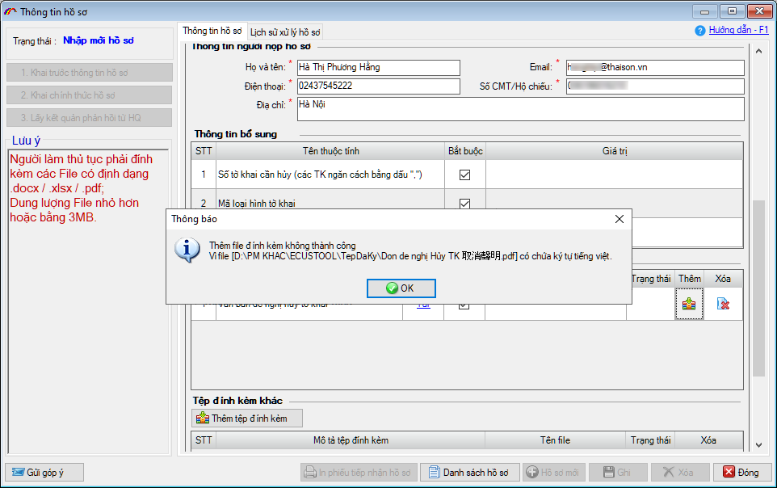
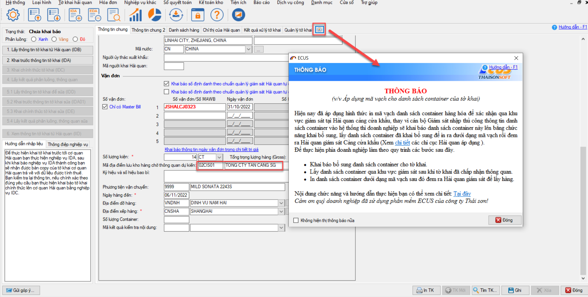
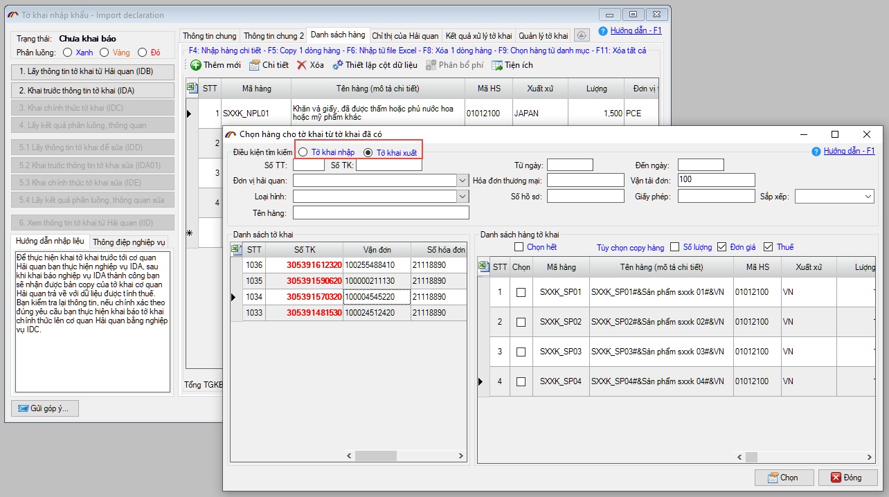
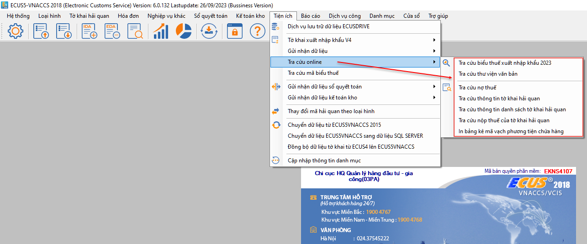
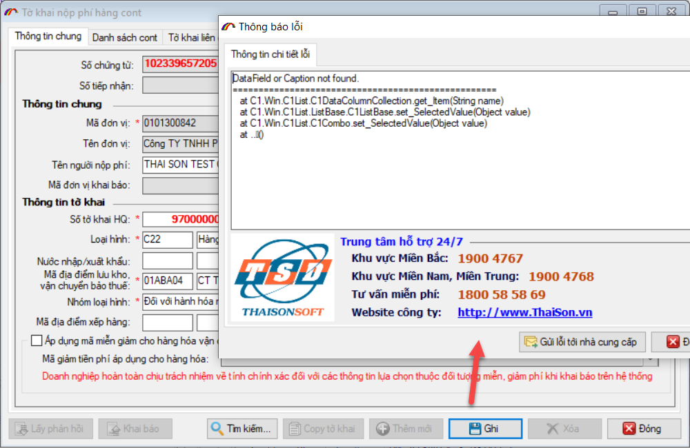
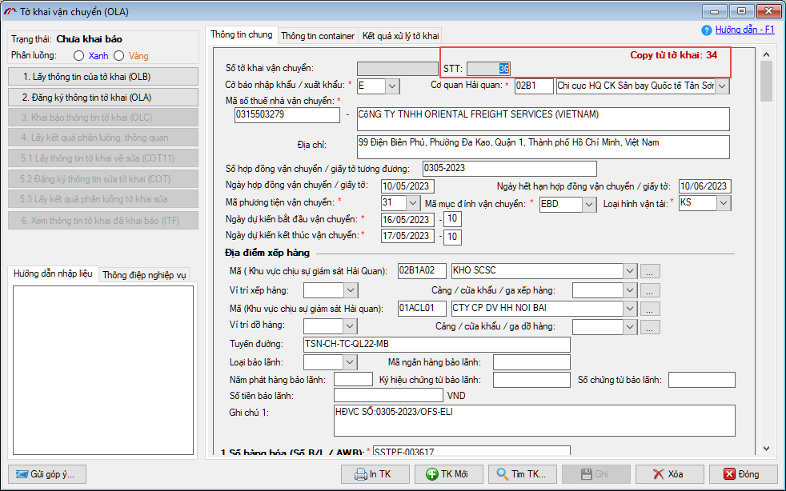
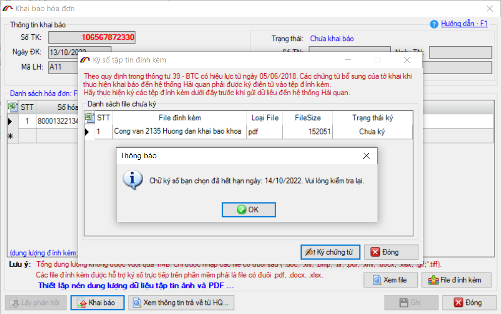
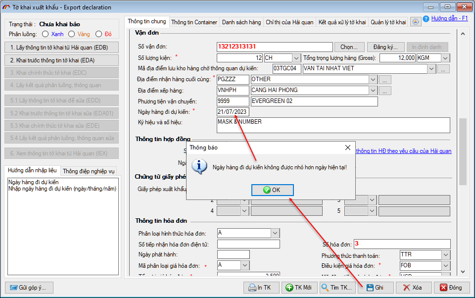

NHỮNG THAY ĐỔI TRÊN BẢN ECUS5VNACCS 2018
(Phiên bản update 08/10/2023)
Phần mềm ECUS5VNACCS2018 - Ngày phát hành 24/10/2023
Phiên bản cập nhật ngày 08/10/2023 được phát hành ngày 24/10/2023 bổ sung, sửa đổi các chức năng sau:
- 1. DVC - Cảnh báo khi đính kèm tên file có ký tự đặc biệt.
Phần mềm bổ sung chức năng cảnh báo cho người dùng khi đính kèm file vào hồ sơ dịch vụ công, mà trong tên file có chứa ký tự Tiếng Việt, ký tự đặc biệt...để tránh trường hợp khai lên được nhưng cán bộ Hải quan không xem được file.

- 2. Ẩn thông báo áp dụng mã vạch
Khi tờ khai đang có mã địa điểm lưu kho là 02CIS.. và người dùng nhấn vào chức năng reset danh mục trên tờ khai, phần mềm hiển thị lại thông báo về việc áp dụng mã vạch cho danh sách container của tờ khai.
Ở bản update này, phần mềm đã bỏ thông báo trên.

- 3. Cho phép chọn hàng từ tờ khai nhập khẩu, xuất khẩu đã có:
Phần mềm sửa đổi bổ sung chức năng chọn hàng từ tờ khai, cho phép doanh nghiệp có thể chọn được dòng hàng của tờ khai bất kỳ (nhập khẩu, xuất khẩu):

- 4. Sửa đổi chức năng trong menu Tiện ích / Tra cứu online.
Cụ thể bản update lần này đã bỏ chức năng Tư vấn HQ trực tuyến, update sửa lại link cho chức năng Tra cứu nợ thuế và Tra cứu thư viện văn bản:

- 5. Sửa lỗi khi xem tờ khai thủ công (đầu số 97, 98) trên tờ khai thu phí.
Doanh nghiệp tạo tờ khai thu phí HCM bằng tay, nhập tờ khai đầu thủ công (đầu số 97, 98) khi ghi hoặc xem lại tờ khai thì bị lỗi:

- 6. Sửa bổ sung chức năng phân quyền.
Sửa bổ sung chức năng phân quyền người dùng để khi Truy cập với tên khác, phần mềm cập nhật và hiện thị đúng quyền hạn của user mới đăng nhập
- 7. Sửa bổ sung chức năng in nhiều tờ khai.
Ở bản nâng cấp này, phần mềm sửa bổ sung cho chức năng in nhiều tờ khai, cả với những tờ khai không có thông điệp.
- 8. Bổ sung trường dữ liệu cho tờ khai OLA.
Phần mềm bổ sung thêm 2 chỉ tiêu: STT và nhãn Copy từ tờ khai: để giúp doanh nghiệp dễ dàng theo dõi và quản lý.

- 9. Thông báo khi ký số chứng từ với chữ ký số đã hết hạn.
Để tránh mất thời gian khai báo của doanh nghiệp, phần mềm sẽ kiểm tra và hiện thông báo chữ ký số đã hết hạn, ngay khi doanh nghiệp chọn thiết bị chữ ký số để ký chứng từ đính kèm:

- 10. Cảnh báo ngày hàng đi dự kiến của tờ khai xuất khẩu.
Nếu doanh nghiệp nhập ngày hàng đi dự kiến trên tờ khai xuất khẩu là ngày trong quá khứ (ngày bé hơn ngày hiện tại), khi nhấn nút Ghi phần mềm sẽ hiện thông báo cảnh báo để người dùng sửa lại cho đúng:

- Ngoài ra, còn có nhiều mục sửa đổi bổ sung khác nhằm nâng cao hiệu suất và tạo sự thuận lợi cho người dùng...
...
Bản quyền © thuộc về Công ty TNHH Phát triển công nghệ Thái Sơn